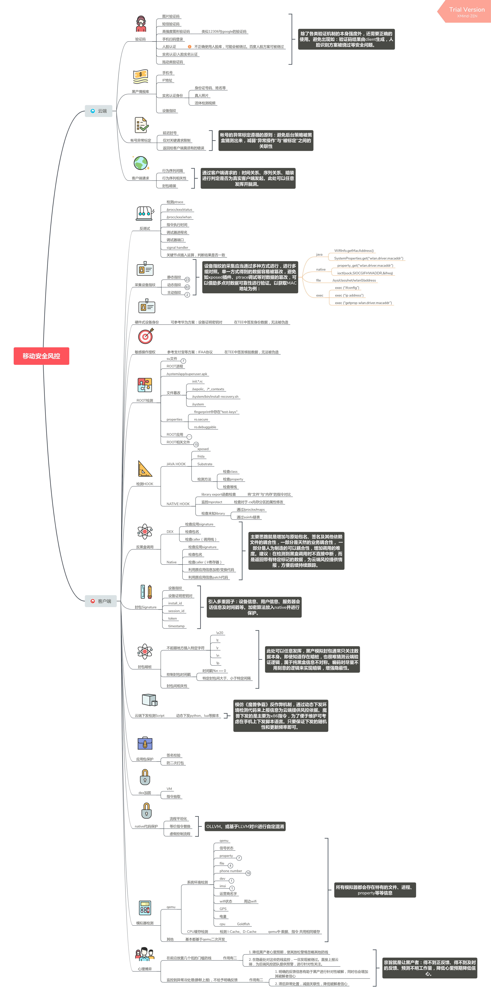

移动应用 - 黑产风控体系
全面整体协同防御的思想在移动安全领域显得尤为重要，主要由于移动应用的价值全部依附于数据之上，而数据驱动的场景需求是目前互联网2C企业的核心价值来源。基于这种场景移动应用基本为"端"+“云"或者说是"端"依附于"云"的架构模式。
-
“端"的模式主要集中于2000年以前桌面软件及桌面游戏时期的模式，当时的软件/游戏价值几乎全部来自于软件本身的本地功能或者本地游戏剧情，在中国各类收费软件(共享软件)被破解的情况遍地都是，最有代表性的当属office套件及windows系统，我当时开发的几款共享软件经常遭有组织团队的破解团队，所幸我当时已有一些安全意识，所以软件中有大量代码加密及暗装保护才免于损失。
-
“云"的模式主要集中与2000至2010年左右，有很多如各类导航网站、校内网、QQ空间、抢车位、偷菜等等，带有社交属性的各类产品发展迅猛，由于纯云端的交互方式，导致当时制作各类外挂的成本极低，只要通晓一些HTTP协议及相关HTML+JS知识便可，而且云端可抓取的风控数据非常有限，再加上当时依靠大数据(黑产库)的风控方式还未成型，所以对抗手段相对比较有限。
最后回到移动应用，移动通信技术的发展、通信基础设施建设和低功耗的芯片发展等诸多因素促成了移动互联的蓬勃发展，移动应用模式融合了"端”+“云"的模式，移动互联网目前还处于风口期，巨大的资本吸引力也吸引到了众多黑产、灰产的青睐，不少初创团队为此付出了巨大代价甚至破产。在我看来"端”+“云"的模式非常有利于安全风控发挥能量，”端“可以采集并提供大量的环境和行为数据为风控提供数据支撑，“云"作为一个黑箱可以制造天然的信息不对称性，利用这种不对称性对”端“提供的数据进行各种花式分析及判定，充分掌握主动权。而前面提到的大量初创团队因黑产遭受损失基本可归咎于行业发展太快，研发人员缺乏安全素养，只关注业务功能而忽略安全本身带来的后果。 以上是一些随意的总结，以下是本人基于个人对于风控的理解及经验，列出的一套自认为比较完备的移动应用风控方案：
（国内应该少有大厂能够完全覆盖，当然具体采用的方案还是要取决于具体的行业及业务需求）

上图各项在实施时并不易，对于安全团队的整体素质要求也有相当高，非几名普通的逆向、应用安全人员就能够胜任。图中几乎每个子方案在实践时都需要不小的投入才能使其可靠，一两名安全专家并配合后端数据工程师的协助才可能将这套体系初步搭建起来，后续还要进行持续的更新及数据运营才能保证这套体系的效能。
以上是个人的一些想法，有疏漏在所难免。